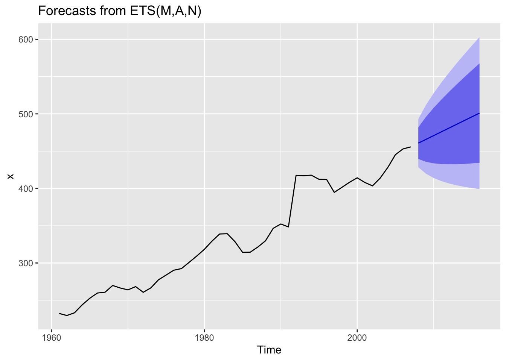

9 Séries Temporais
Uma série temporal é um conjunto de dados observado no tempo. (Hyndman and Athanasopoulos 2018) trazem uma compilação dos principais e mais recentes métodos da literatura, programados na biblioteca fpp2 de (Hyndman 2020). A seguir está o código fits, escrito com algumas funções desta biblioteca, de maneira a utilizar os seguintes métodos:
- ARIMA (AutoRegressive Integrated Moving Average), função
auto.arima
- ETS (Modelo de espaço de estados com suavização exponencial), função
ets
- TBATS (Modelo de espaço de estados com suavização exponencial com transformação Box-Cox, erros ARMA e componentes sazonais e de tendência), função
tbats
- NNETAR (Rede neural autorregressiva), função
nnetar

## $fcast
## Point Forecast Lo 80 Hi 80 Lo 95 Hi 95
## 2008 461 440 482 428 493
## 2009 466 436 496 420 512
## 2010 471 434 508 414 528
## 2011 476 433 519 410 542
## 2012 481 432 529 407 555
## 2013 486 432 539 404 568
## 2014 491 433 549 402 580
## 2015 496 434 558 401 591
## 2016 501 434 568 399 603
##
## $mse.pred
## mse.pred.aa mse.pred.ets mse.pred.tb mse.pred.nn
## 1 109 103 253 742
##
## $best.model
## [1] "ets"
##
## $runtime
## Time difference of 1.11 secs
Exercise 9.1 Considere a função
a) Avalie os parâmetros da função a partir do código.
b) Aplique nos bancos de dados
fits.a) Avalie os parâmetros da função a partir do código.
b) Aplique nos bancos de dados
h02 e gas, utliizando os parâmetros que considerar mais adequados.
Exercise 9.2 Considere o banco de dados do índice Dow Jones disponível em https://archive.ics.uci.edu/ml/datasets/Dow+Jones+Index, lido com o código abaixo.
url1 <- 'https://archive.ics.uci.edu/ml/machine-learning-databases/00312/dow_jones_index.zip'
download.file(url1, 'temp.zip', mode = 'wb')
dat <- suppressMessages(read_csv('temp.zip'))
st <- ts(dat$percent_change_next_weeks_price)- Modele e projete a série
percent_change_next_weeks_priceatravés da funçãofits. Busque pelos melhores modelos alterando os parâmetros da função, tais comotrainemax.points.
- Avalie outras colunas do banco de dados e repita as operações do item a.
Referências
Hyndman, Rob. 2020. Fpp2: Data for "Forecasting: Principles and Practice" (2nd Edition). https://CRAN.R-project.org/package=fpp2.
Hyndman, Rob J, and George Athanasopoulos. 2018. Forecasting: Principles and Practice. OTexts. https://otexts.com/fpp2/.